Last Six Edges (LSE) back
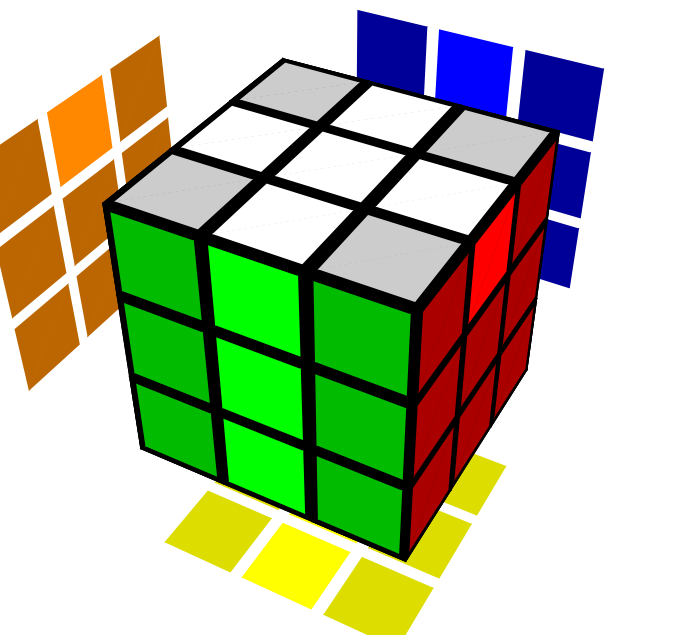
RICK: S-s-so I have a-a bit of a confession to make, Morty. Th-this group isn't
everything it's hyped up to be, Morty. Y-y-you'll struggle at first, Morty,
but you gotta persevere, okay Morty? Y-you gotta persevere a-aand
eventually it'll be good Morty, i-i-it'll feel real nice, Morty. k-k-inda
l-like putting cubes w-w-way up inside your butthole, Morty. A-a-at first
it was a little d-d-difficult a-a-and mildly painful, b-b-but now everything
goes realy sm-smoothly, Morty. Th-that's what LSE is gonna be like, Morty!
Y-y-you just gotta keep going, no matter how much it hurts, Morty!
Y-y-you gotta do it for grandpa, Morty!
Orientation back
RICK: A-a-alright first y-you gotta orient all the edges Morty. S-since
y-your blocks have yellow on the bottom, e-e-edges are oriented if the
w-white or yellow sticker is on the U or D face--if they're not on the U
or D face, th-then they're bad Morty! Then we g-*burp*-otta fix them Morty!
MORTY: Th-that sounds really complicated, Rick! H-h-how are we gonna fix
th-the bad edges?
RICK: W-w-w-we're gonna use nothing but <M,U> moves, Morty! I-i-it
works like this: w-w-we wanna m-move our bad edges around until they look
like this, Morty!
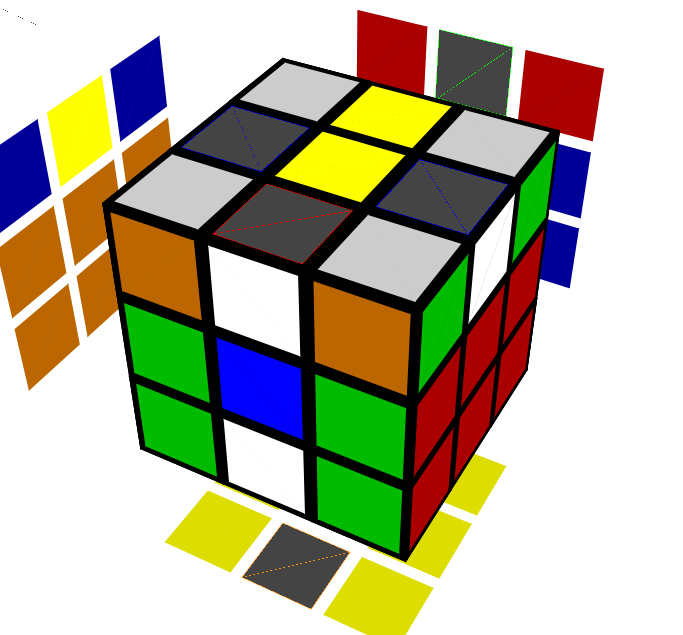
RICK: S-s-s-see how there are three bad edges on the U face, a-a-and one
bad edge right below the three on the D face Morty? Th-this is want we
want Morty, i-i-it's called the arrow case!
MORTY: W-w-wait how do we know that the edge in the back th-th-that we
can't see (DB) is good? C-c-couldn't we have five bad edges?
RICK: N-n-nah Morty that's impossible, th-the cube can only have an even
number of bad edges at any g-i-i*burp*iven time Morty. S-s-so we know by
deduction that DB can't be bad, b-b-because then there'd be an odd number
of edges.
MORTY: O-oo-oh th-that's pretty neat Rick! Th-that's really nifty! I-i-it
would really come in handy if y-y-you wanted to solve q-quickly, yknow?
B-b-because you could figure out wh-which edges are bad j-j-just by looking
at the edges that are already visible!
RICK: Th-that's exactly right Morty, y-y-you're starting to catch on. I-i-i
may have to g-g-go back to the council of R-r-ricks and g-g-get myself a-a-a
more effective Morty if y-y-you keep using your brain that well like that
Morty!
N-n-now the arrow case is good because once you have it, y-y-you do this
thing called the Moo, Morty, a-a-a-and it orients all your edges!
Th-the Moo goes like this Morty: M' U M'
Y-y-you can also do a variant of the Moo from the back, Morty! I-i-it
looks like this: M U M'
Th-that'll solve an arrow th-that's facing the opposite direction, like
this (once again Morty, y-y-you know DB is bad because you see a-an odd
number of edges, wh-which means the hidden edge must also be bad, Morty):

MORTY: Oh-oh wow, th-that's r-really neat Rick, b-b-b-but what about wh-when
you don't have an arrow, Rick? Wh-what if there are only 2 bad edges,
or what if a-a-all 6 edges are bad?
RICK: W-w-well then y-y-you gotta g-g-get them to the arrow case, Morty!
L-look Morty, I've made a nice table here t-to explain it to you. H-h-here's
how you s-solve all the orientation cases Morty! P-p-pick the entry that
describes w-w-where your bad edges are on the cube a-a-and follow the
instructions below it, Morty! E-e-e-each instruction set w-w-will get you
to a different entry on the table, Morty! J-j-just keep l-l-looking up the
case and following the corresponding instruction u-u-until you reach the
fully oriented state, Morty!
MORTY: W-w-wait what about all the other colors on the diagram, Rick?
I-i-i-i thought we were just l-l-looking at white and yellow stickers!
RICK: Yeah Morty i-i-its' like I said, w-w-we can't afford fancy diagrams
a-a-nd all that *burp*. J-j-just ignore the other colors Morty! I-i-it's
like what you do with your insecurities o-o-on a daily basis! Jj-just
pretend they aren't there Morty!
| Description of case |
All 6 edges bad |
4 edges bad (3 on U, 1 on DF) |
4 edges bad (3 on U, 1 on DB) |
4 edges bad, all on U |
4 edges bad (2 across on U, 2 on D) |
4 edges bad (2 adjacent on U, 2 on D) |
2 edges bad, adjacent on U |
2 edges bad, across on U |
2 edges bad, on D |
2 edges bad, (1 on U, 1 on DF) |
2 edges bad, (1 on U, 1 on DB) |
| Visual |
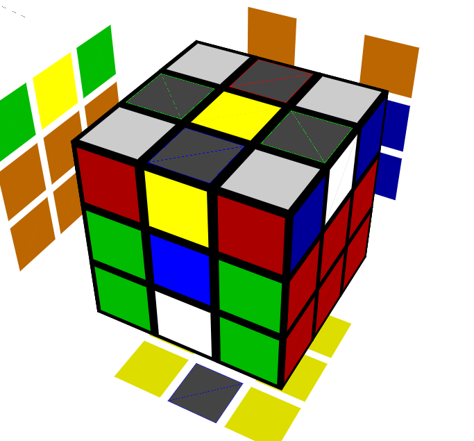 |
 |
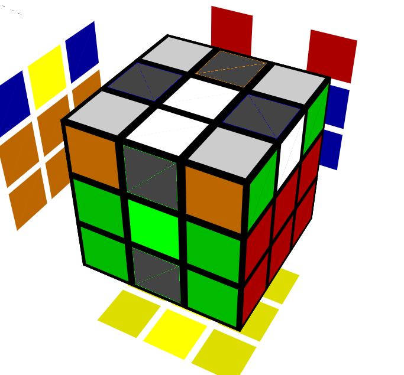 |
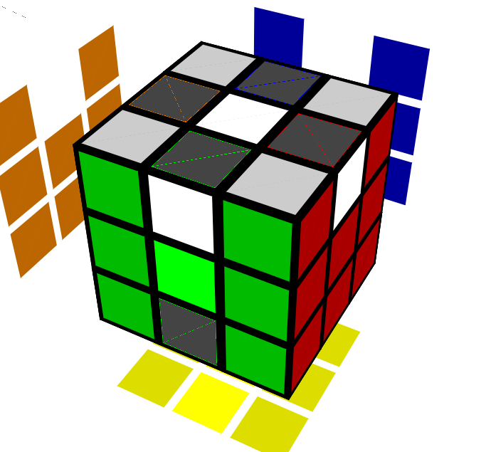 |
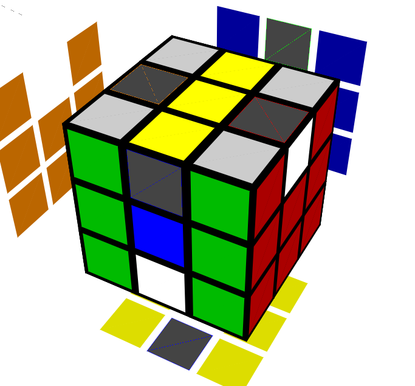 |
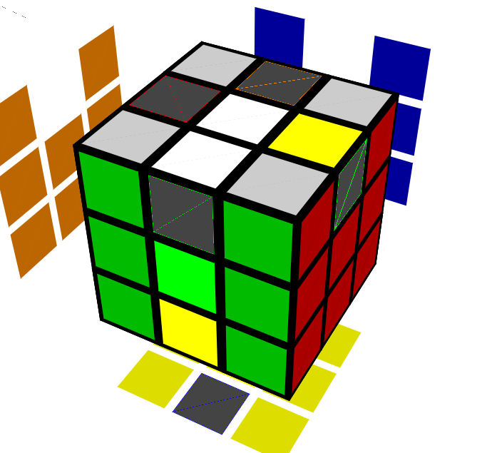 |
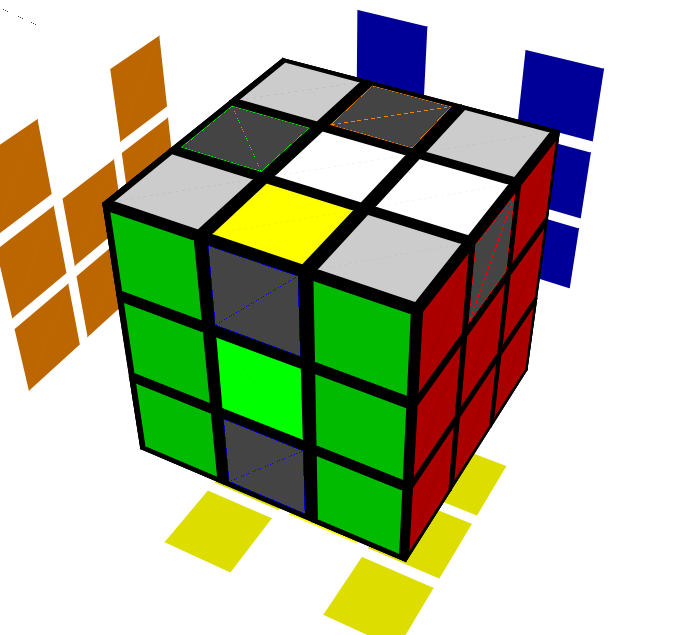 |
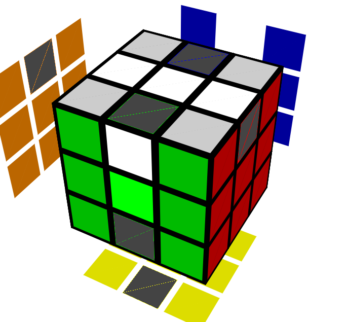 |
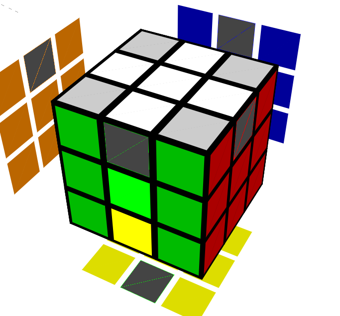 |
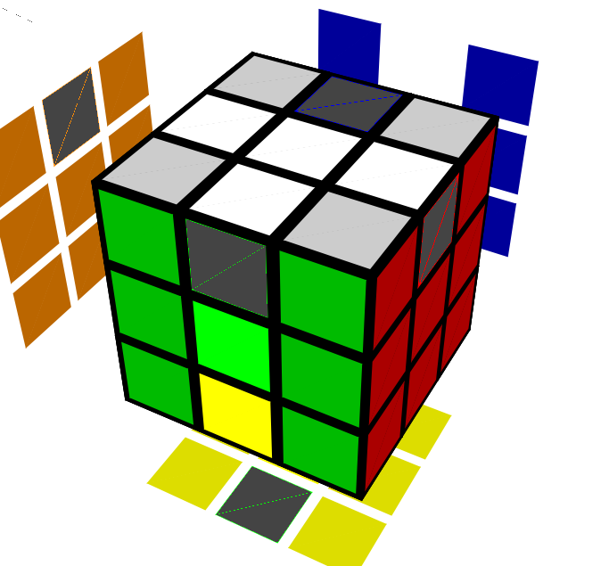 |
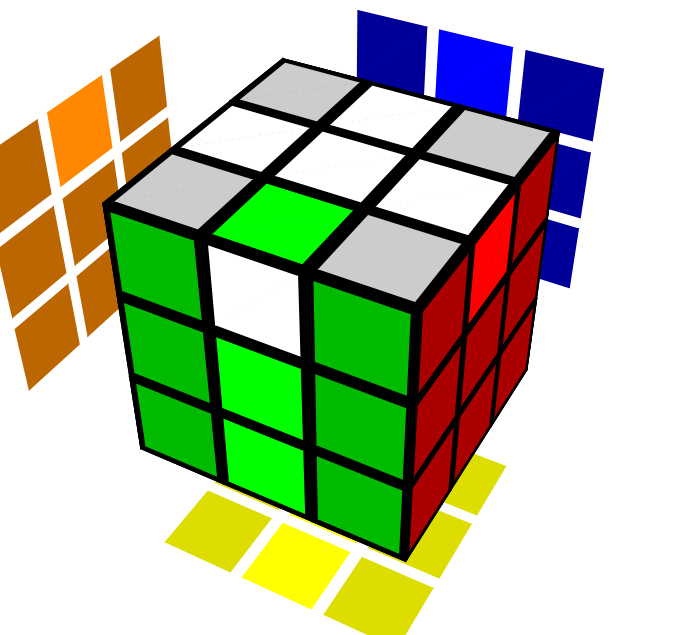 |
| Algorithm |
M' U M' |
Adjust the 3 on U until they look as shown, then: M' U M' |
Adjust the 3 on U until they look as shown, then: M2 |
M' U2 M' |
Adjust the 2 on U until they look as shown, then: M2 |
Adjust the 2 on U until they look as shown, then: M2 |
Adjust the 2 on U until they look as shown, then: M' U M' |
Adjust the 2 on U until they look as shown, then: M' U M |
M' U M' |
Adjust the 1 on U until it looks as shown, then: M' U M |
Adjust the 1 on U until it looks as shown, then: M' U M' |
UL and UR back
RICK: A-alright Morty, now that your edges are oriented, w-w-we need to
solve the UL and UR edges. S-s-since your blocks have red on the left
a-a-and orange on the right, w-w-we need to solve th-the white-orange
and white-red edges in this step. A-a-a-after this Morty w-we're not even
in <M,U>-land, Morty! W-w-we'll be in th-the <M,U2> group,
w-w-which is even smaller! Th-th-that's how close we are
to solving the cube, Morty!
MORTY: O-o-oh-oh wow, Rick, th-th-that's a-a-a very restricted move group
w-w-we got there! W-we're really reducing th-th-the cube down to very few
states, Rick!
RICK: *buuuuuurp* th-that's how it works Morty. Cube'll-l be solved w-within
the hour, Morty, y-y-you just watch.
MORTY: S-s-so how do you solve UL and UR, Rick?
RICK: I-i-it works the saa-a-a*burp*- the same way Morty. Y-y-you look for
your UL and UR edges in the table below and f-f-follow the instructions
to get t-to a state closer to solved. T-t-then you l-l-look up your new
state in the table a-a-and repeat until it's solved Morty! I-i-iit's that
simple Morty! Soon y-y-you won't even need the table to solve this stuff
Morty, then th-these steps'll really fly, you'll see! J-j-just gotta
persevere, Morty!
N-n-n-now first we gotta p-p-put the edges in a position w-where we can
solve them easily Morty! To do that, y-y-you gotta keep following the
table Morty! Note that s-s-some of the pictures are tilted t-to give you
a view of the B face--d-don't accidentally rotate your cube Morty!
W-w-w-we probably should've told this fella here this o-on the first page,
b-b-but you don't ever rotate your cube w-w-when solving using the Roux
method Morty! N-n-not even once, i-i-it's like what you m-m-millenials
say a-a-about drugs these days!
Also note that w-w-we don't care about which one is in which place
right now, j-j-just that they occupy the two positions--so i-i-if you have
your UL and UR matching the picture, b-b-but swapped in position, don't
worry about it. *drink*
| Position of UL UR |
Adjacent on U |
Across on U |
Both on F (at UF and DF) or both on B (at UB and DB) |
1 on U, 1 on DF |
1 on U, 1 on DB |
Both on D |
| Visual |
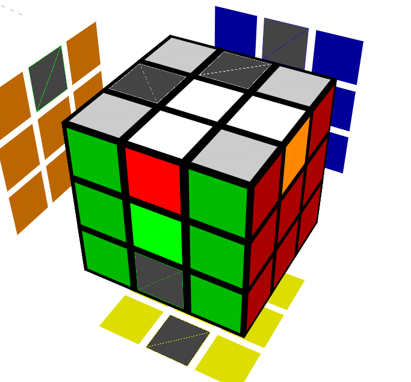 |
 |
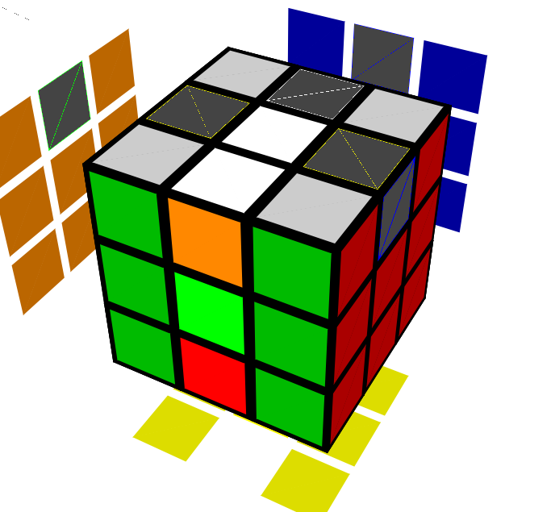 or
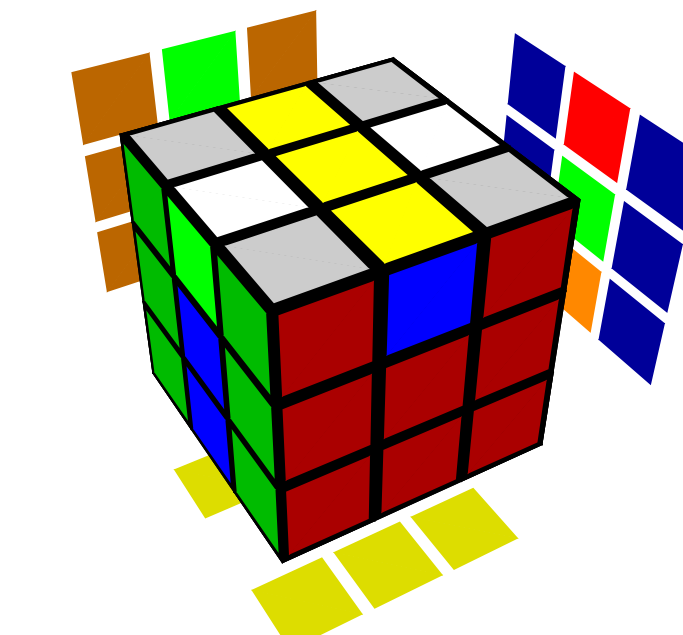 |
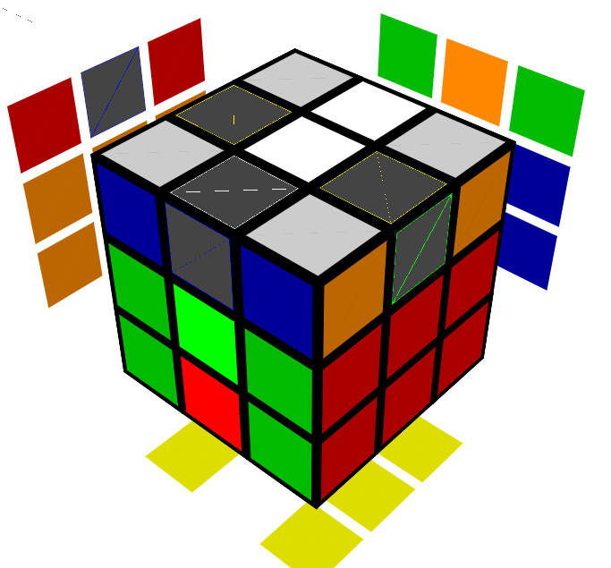 |
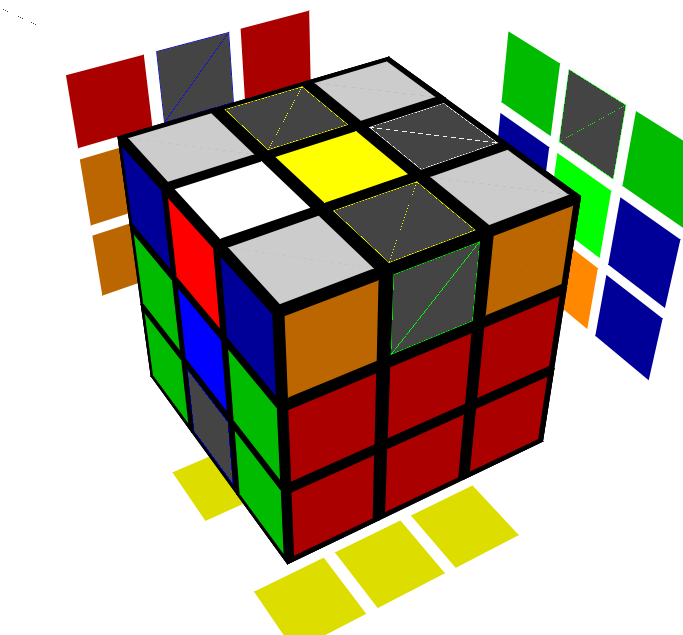 |
 |
| Algorithm |
Adjust the 2 on U until positioned as shown, then: M2 U |
Adjust the 2 on U until positioned as shown, then: M2 |
U2 |
Adjust the 1 on U until positioned as shown, then: M U2 M' |
Adjust the 1 on U until positioned as shown, then: M' U2 M |
Y-y-you're done, Morty! Onto the next step! |
RICK: O-okay Morty, w-w-we are now ready t-to get our UL and UR edges solved!
MORTY: O-o-oh boy Rick, h-h-how are we gonna manage that?
RICK: W-w-well Morty, do y-you see those c-co-*burp*-olors on the sides
of your corner pieces? S-s-see how, on a-aany given face, th-they are always
th-the same color?
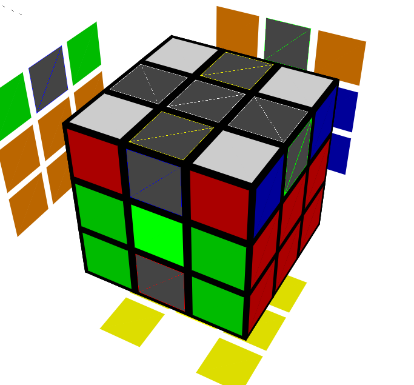
MORTY: O-o-oh yeah I-i-i see it Rick. L-l-like in the picture above, th-the
stickers on the F face o-of the U layer corner pieces are all red, a-a-and
the stickers on the R face of the U layer corner pieces are all blue, a-a-and
th-the pattern continues for the other sides!
RICK: Y-y-yeah Morty, exactly. S-s-see how between each pair of identical colors,
th-there's an empty space wh-where an edge piece should go? L-l-like in that picture,
th-theres a space on UF b-b-between the two red stickers on the F face?
MORTY: Y-y-yeah Rick, i-i-is that how we're gonna solve the UL and UR edges?
RICK: Yuuu-*burp*-uup. W-w-we're gonna call those things slots. S-s-so in
that p-picture up there, th-the front face c-currently contains the "red slot",
th-the right face contains the blue slot, a-a-a-and so on.
MORTY: O-o-o-okay Rick, b-b-b-but how does this help s-
RICK: Y-y-y-yeah I-ii-i-i'm getting there, Morty! Y-y-y-you gotta be patient,
y-you know? G-g-good things c-come to those who wait, a-a-and all that.
N-n-now remember: y-y-our UL and UR pieces are in the D layer. Wh-what you want
to do is adjust the U face u-until the color of the slot on the front
face i-i-is "opposite" o-o-of the color of the sticker on FD! S-s-so in that
p-p-picture, s-s-since FD is red, y-y-you want to get the orange slot above
it, since the red is opposite orange on the cube!
Th-then, after y-you have the correct slot lined up, y-y-you want to do an
M2, a-a-and y-y-you'll have put your UL and UR edges i-into the slot
Morty! N-n-now you just- you just gotta adjust y-your U face until y-y-you
have two c-c-completely solved layers on the left and right faces Morty!
I-i-it'll look something like this demo picture in the section below Morty!
M slice (everything else) back

RICK: L-l-look Morty, w-w-w-we've made it! W-we've made it to the
<M,U2> group, Morty!
MORTY: O-oh wow Rick, I-iit looks so pretty! I-ii-it's got a really neat
pattern, y-yknow?
RICK: Y-y-yeah Morty, from h-here y-y-you just need to permute a-a-all the
remaining edges Morty! I-i-it's just a couple of algorithms from here on
out Morty!
H-h-here are the easy cases first, s-s-so you can feel acco-o-*burp*-omplished
wh-when you luck into one of them Morty:
| Description |
Vertical bars |
Horizontal bars |
Dots/weird |
| Visual |
 |
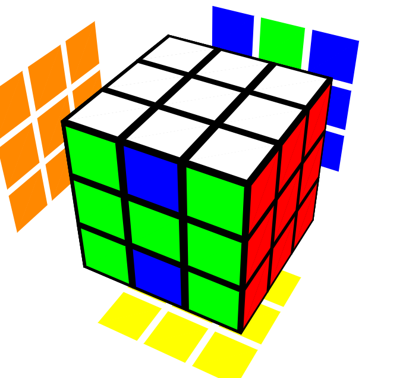 |
 or or
 |
| Algorithm |
M' U2 M2 U2. Adjust M slice until solved. |
U2 M2 U2. Adjust M slice until solved. |
M' U2 M2 U2 M' U2 M2 U2. Adjust M slice until solved. |
RICK: O-o-okay Morty, n-now here a-a-re the harder ones. Th-they're hard
because th-they'res no super easy pattern. H-h-here are some examples:
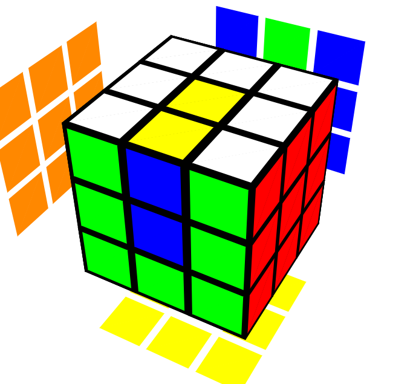
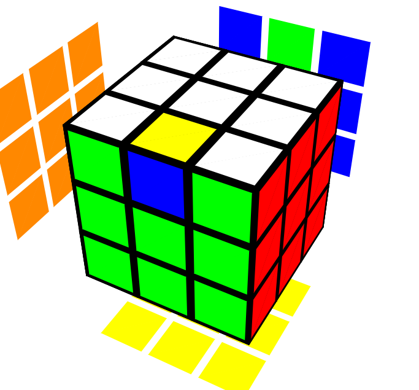
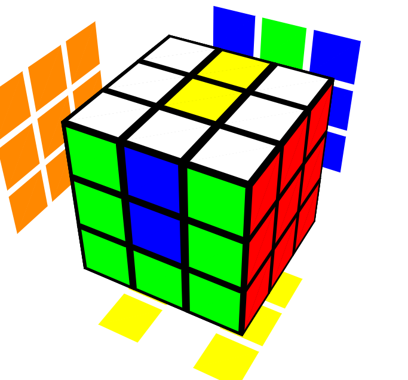
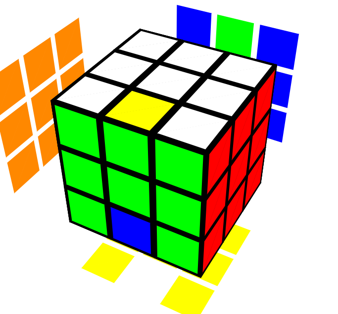
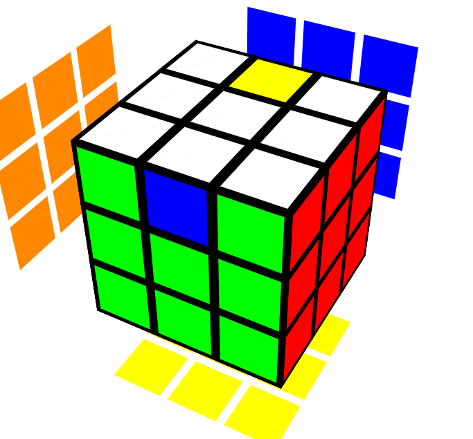

MORTY: W-w-w-wait Rick, th-those last two l-l-ooked almost exactly the same!
RICK: Yup *drink*. These cases a-are a bitch to recognize, Morty. Th-they're called
3-cycles, b-b-because you have to cycle 3 edges a-along the M slice to solve
them.
MORTY: Oh-oh-oho-o-ohh jeez, Rick h-h-how do we figure out which a-a-algorithm
to use?
RICK: Y-y-y-you use your brain, Morty. L-look, see the first o-one
of those examples up there? S-s-see how i-it has a weird thing going on
w-with the UF e-edge where that edge is connected to both of its adjacent
centers?
MORTY: Y-yeah?
RICK: A-a-a-and see how th-the second one h-has a weird edge at UF a-a-all
by its lonesome, not connected t-to any of its adjacent centers?
MORTY: Y-y-yeah, so what, Rick?
RICK: W-w-w-well i-i-if that v-v-at between your ears h-had anything going
on in at all in there Morty, y-y-you'd realize that th-they're useful
identifiers f-for 3-cycles Morty! Y-you see, every 3-cycle has o-one
connected block and one lonely edge. T-to solve them, you want to adjust
the M slice u-until the lonely edge is in the U face a-a-and the connected
block is not in the U face.
For the first example up there, i-i-it'd look something like this Morty:

RICK: I-i-i've adjusted the M slice by 180 degrees a-a-and moved the camera angle Morty.
Y-y-you can see that the connected block is in DB (y-y-you can see it in
the reflection o-on the bottom there, Morty) a-a-and the lonly edge is in UB. *drink*
Turns out y-y-you can only get two possibilities once you a-adjust the
M slice like this Morty: e-e-either the connected block and lonely edge
are in the back, l-like in that picture up there, o-or they're in the front.
I-i-if they're in the back, you gotta do U2 M' U2, a-a-a-and
if they're in the front, you gotta do U2 M U2! I-i-i-it's that
simple Morty! A-a-after that, y-y-you just gotta adjust the M slice until
th-the cube is solved, Morty! Th-th-that's all there is to it Morty!
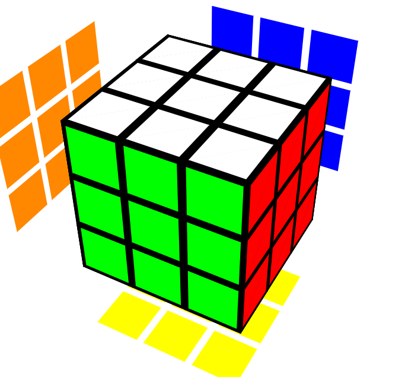
MORTY: O-ohoh wow Rick, th-that's really a-a-amazing! W-w-we just solved
the cube Rick!
RICK: Y-y-yeah Morty, w-w-we did it! A-a-a-*burp*-all 20
pieces Morty! A-a-a-and all it took was a little bit o-o-of thinking Morty!
A-a-and to think that e-e-veerything was so messy and disordered
when w-we started Morty! B-b-b-but look at this beauty now Morty!
I-i-i-i don't think anything can compare Morty!
You shou-you should b-b-e proud, Morty!
W-w-w-we solved the whole R-r-ubik's Cube, Morty!
I-i-i-i I think this c-c-ca-a*buuurp*alls for some
celebration, Morty! *activates recliner*
BWAAAA NEA DA NE NUH NE NUHHHHHHHHHHHH
BWAAA NEA, DA NE NEEUEUEEUEUEUEUUUHHHHHHHHHH
BWAAA NEA DA NE NEAUUUHHHH NEUUEUEEAEEEEEEE NUHHHHHHH
BWAAAAA NEA DA NE NUAUAUAUEUEUUEEEEEHHHHHHHH
BWAAA NEA, DA NE NEEUEUEEUEUEUEUUUHHHHHHHHHH
BWAAA NEA DA NE NEAUUUHHHH NEUUEUEEAEEEEEEE NUHHHHHHH
Credits: Images thanks to alg.cubing.net. Genius of Rick and Morty thanks
to God (RIP, God. You did good.).